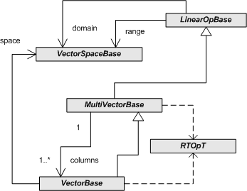
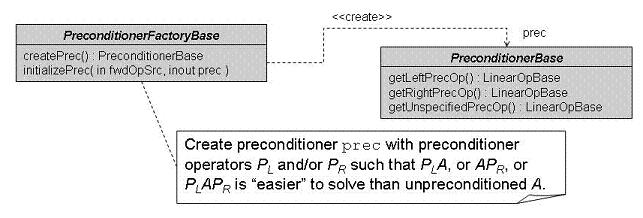
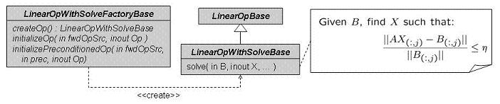
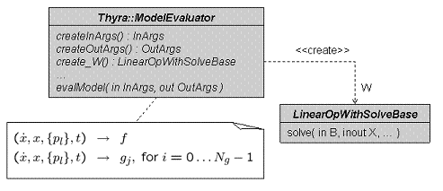

Outline
- Introduction
- thyra_software_sec
- Some Technicalities about Thyra Software
- Other Trilinos Packages on which Thyra Depends
- Frequently Asked Questions (FAQ)
- Documents Describing or are Related to Thyra
- Contributors to the Thyra Package and Related Software
- Other Software Related to Thyra
Introduction
The Thyra package contains a set of interfaces and supporting code that defines basic interoperability mechanisms between different types of numerical software. The foundation of all the interfaces related to abstract numerical algorithms (ANAs) are the mathematical concepts of vectors, vector spaces, and linear operators. All other ANA interfaces and support software are built on these fundamental operator/vector interfaces.
This main page provides the starting point for all of the documentation for Thyra interfaces and software. This documentation is generated using Doxygen.
The documentation for Thyra is broken up into a number of different doxygen collections as described in the next section.
Thyra interoperability interfaces
Module: Thyra interfaces
All of the software in the src/interfaces directory define fundamental interoperability interfaces needed to glue code together. This is the most critical aspect of Thyra. In addition, interfaces are also partitioned between fundamental interfaces and extended interfaces.
Operator/Vector Interfaces
Module: Thyra interfaces
-
Fundamental ANA Operator/Vector Interfaces
Module: Thyra operator/vector fundamental interfaces
This minimal set of basic operator/vector interfaces described here forms the foundation for all of the interoperability interfaces related to Abstract Numerical Algorithms (ANAs) provided in the Thyra package.
The fundamental interface classes shown in the above UML class diagram are described below:
-
Thyra::VectorSpaceFactoryBaseis the basic factory interface for creatingThyra::VectorSpaceBaseobjects given a dimension. -
Thyra::VectorSpaceBaseis the fundamental abstract interface for a vector space that defines the scalar product and factory functions for creatingThyra::VectorBaseandThyra::MultiVectorBaseobjects. -
Thyra::VectorBaseis the fundamental abstract interface for finite-dimensional vectors. -
Thyra::LinearOpBaseis the fundamental abstract interface for linear operators. -
Thyra::MultiVectorBaseis the fundamental abstract interface for collections of column vectors.
These interface classes rely on a few basic types and basic exception classes.
One important paper describing the RTOp approach, which provides the foundation for
RTOpPack::RTOpT, can be found in this paper. Note thatRTOpPack::RTOpTis a refinement of the C and C++ RTOp interfaces described in the aforementioned paper. -
-
Extended ANA Operator/Vector Interfaces
Module: Thyra operator/vector extended interfaces
These are some interfaces based on the above Fundamental ANA Operator/Vector Interfaces and provide other pieces of functionality and define new types of interoperability. For example, this is where interfaces to various types of composite subclasses exist for product, or block, vector spaces (
Thyra::ProductVectorSpaceBase), vectors (Thyra::ProductVectorBase), and multi-vectors (Thyra::ProductMultiVectorBase). Various interfaces to decorator and composite linear operators are also contained here and include, for example,Thyra::ScaledAdjointLinearOpBase.-
Interfaces to product vector spaces, vectors and multi-vectors
-
Thyra::ProductVectorSpaceBasedefines an interface for a composite product vector space composed from one or more constituentThyra::VectorSpaceBaseobjects. -
Thyra::ProductVectorBasedefines an interface for a composite product vector composed from one or more constituentThyra::VectorBaseobjects. -
Thyra::ProductMultiVectorBasedefines an interface for a composite product multi-vector composed from one or more constituentThyra::MultiVectorBaseobjects.
-
-
Composite and other linear operator base classes:
Note that below, the term "implicit" denotes the fact that the operators are not actually formed. For example, the sum of the implicitly added linear operators is never calculated, but the action of these operators on a vector is computed correctly as the sum of the action of each individual operator on that vector.
-
Thyra::ScaledAdjointLinearOpBaseis the base class for all decorator subclasses that implicitly scale and/or transpose aThyra::LinearOpBaseobject. -
Thyra::ZeroLinearOpBasedefines the interface for a zero linear operator. -
Thyra::IdentityLinearOpBasedefines the interface for an identity linear operator
-
Thyra::AddedLinearOpBasedefines the interface for implicitly added linear operators. -
Thyra::MultipliedLinearOpBasedefines the interface for implicitly added linear operators. -
Thyra::DiagonalLinearOpBasedefines the interface for a basic diagonal linear operator. -
Thyra::BlockedLinearOpBaseis a base class for a logically blockedLinearOpBase. -
Thyra::PhysicallyBlockedLinearOpBaseis a base class for a physically blockedLinearOpBaseobject where the blocks can be set externally.
-
-
MPI-Specific ANA-based interfaces
Note: These interfaces are not strictly related to ANAs and therefore may not be appropriate to be placed in this collection. However, they are derived for the ANA interfaces and therefore, very weakly, belong in this collection of code.
-
Thyra::MpiVectorSpaceBasedefines an interface for getting information about the partitioning of elements to processors in an SPMD program.
-
-
Miscellaneous
-
Thyra::MultiVectorFileIOBaseis an interface for strategy objects that can read and write (multi)vectors to and from files in a very abstract way. -
Thyra::MultiVectorRandomizerBaseis an interface for strategy objects that can produce random vectors and multi-vectors. -
Teuchos::PolynomialTraitsis a concrete traits class that is used in theThyra::ModelEvaluatorinterface.
-
-

Operator Solve Interfaces
-
Fundamental ANA Operator Solve Interfaces
Module: Thyra operator solve fundamental interfaces
These are interfaces that provide a high-level interface to preconditioners, linear solvers (
Thyra::LinearOpWithSolveBase), and factories for these (i.e.Thyra::LinearOpWithSolveFactoryBaseandThyra::PreconditionerFactoryBase). Below we use the term "forward" to denote the original operator to which a solver is associated to distinguish it from the "inverse" operator.-
Thyra::PreconditionerBasedefines an interface to left, right, split left/right, and otherwise general preconditioners. -
Thyra::PreconditionerFactoryBasedefines an interface for generating or updating aThyra::PreconditionerBaseobject given a forwardThyra::LinearOpBaseobject. -
Thyra::LinearOpWithSolveBasedefines a simple interface for performing the inverse linear operator application. -
Thyra::LinearOpWithSolveFactoryBasedefines an interface for generating or updating aThyra::LinearOpWithSolveBaseobject given a forwardThyra::LinearOpBaseobject.
-
-
Extended ANA Operator Solve Interfaces
Module: Thyra operator solve extended interfaces
Included here is a variety of extended interfaces that build on the fundamental operator/solve interfaces.
-
Composite linear operator base classes
-
Thyra::BlockedLinearOpWithSolveBaseis a base class for implicitly definedThyra::LinearOpWithSolveBaseobjects accessible as one or moreThyra::LinearOpBaseorThyra::LinearOpWithSolveBasesubblocks. -
Thyra::PhysicallyBlockedLinearOpWithSolveBaseis a base class for compositeThyra::BlockedLinearOpBaseobjects that are built for constituentThyra::LinearOpBaseandThyra::LinearOpWithSolveBaseobjects.
-
-
Nonlinear Interfaces
Module: Thyra nonlinear interfaces
-
Fundamental ANA Model Evaluator Interfaces
Module: Thyra nonlinear model interfaces
-
Thyra::ModelEvaluatorBasedefines basic types used by the model-evaluator. -
Thyra::ModelEvaluatorBase::InArgsdefines the input arguments that aThyra::ModelEvaluatorobject will accept and is used to pass input arguments to an evaluation. -
Thyra::ModelEvaluatorBase::OutArgsdefines the output function/objects that aThyra::ModelEvaluatorobject can compute and is used to pass the output functions/objects from an evaluation. -
Thyra::ModelEvaluatordefines a very general interface for representing a number of different types of nonlinear problems.
-
-
Fundamental ANA Nonlinear Solver Interfaces
Module: Thyra nonlinear solver interfaces
Contained here are interfaces for nonlinear equation solvers.
-
Thyra::NonlinearSolverBasedefines a very general interface for solving a set of nonlinear equations represented through theThyra::ModelEvaluatorinterface.
-
Thyra support software and examples
Module: Thyra support
Operator/Vector Support
Module: Thyra operator/vector support
Described here is a fairly large collection of ANA or client support and adapter support software based on the operator/vector interfaces. For example, you will find things such as unit testing classes (e.g. Thyra::LinearOpTester), and concrete product spaces/vectors/multi-vectors (e.g. Thyra::DefaultProductVectorSpace). Also included is adapter support and concrete implementations for serial and SPMD (Single Program Multiple Data) space/vector/multi-vector implementations (e.g. Thyra::DefaultSpmdVectorSpace). Another category of software is efficient Java-like handle/wrapper classes (e.g. Thyra::VectorSpace, Thyra::Vector, and Thyra::LinearOperator) that defines a convenient API for the development of ANAs using MATLAB-like operator overloading. Some examples are also provided, including several for the Conjugate Gradient method and the Power Method. This collection of software is really too vast to give a full sense of what it contains in this short description.
Operator Solve Support
Module: Operator/Solve ANA Support Software
This collection contains support software for the operator/solve interfaces. Examples include testing software like Thyra::LinearOpWithSolveTester and decorator subclasses like Thyra::DefaultDiagonalLinearOpWithSolve.
Nonlinear Model Evaluator Support
Module: Thyra nonlinear model-evaluator support
This includes support software for the nonlinear model evaluator interfaces. Examples include decorator subclasses like Thyra::DefaultFiniteDifferenceModelEvaluator.
Nonlinear Solvers Support
Module: Thyra nonlinear solver support
Contained here is support software for the nonlinear solver interfaces and some simple concrete implementations. Simple concrete nonlinear equation solver implementations include examples Thyra::LinearNonlinearSolver and Thyra::DampenedNewtonNonlinearSolver.
Thyra adapters to other packages
Module: Thyra adapters
Thyra/Epetra adapters
Module: Thyra/Epetra Operator/Vector Adapter Code
This software allows the creation/conversion of Thyra objects and Epetra objects. Examples include Thyra::EpetraLinearOp, Thyra::EpetraVector, Thyra::EpetraMultiVector, and Thyra::EpetraVectorSpace.
Thyra/Tpetra adapters
Module: Thyra/Tpetra Operator/Vector Adapter Code
This software allows the creation/conversion of Thyra objects and Tpetra objects. Examples include Thyra::TpetraLinearOp, Thyra::TpetraVector, Thyra::TpetraMultiVector, and Thyra::TpetraVectorSpace.
Thyra/EpetraExt adapters
Module: Thyra/EpetraExt Adapter Code
Included here are various adapters between Epetra and EpetraExt based code and Thyra interfaces. For example, one will find the Thyra::EpetraModelEvaluator class in this collection of code.
Browse all of Thyra as a single doxygen collection
You can browse all of Thyra as a single doxygen collection. Warning: This is not the recommended way to learn about Thyra software. However, this is a good way to browse the directory structure of thyra, to locate files, etc.
Some Technicalities about Thyra Software
A few things about the software in the Thyra package are worth mentioning:
-
Scalar and Ordinal (Ordinal) data types
All of the interfaces are templated on a
Scalar(i.e. floating-point) type and therefore almost all of Thyra supports arbitrary scalar types such as complex types (e.g.std::complex<double>), automatic differentiation types, interval types and extended precision types (i.e.mpf_class) in addition to simpler real types such asdoubleandfloat. The only requirement for theScalardata type is that it have value semantics (i.e. default constructor, copy constructor, assignment operators) and define the basic overloaded operatorsoperator+(...),operator-(...),operator*(...)andoperator/(...). The traits classTeuchos::ScalarTraitsprovides a means to write type-independent code and all of the Thyra software uses this traits class. Any scalar type that is to be used as aScalarmust provide a specialization of this traits class (see source code forTeuchos_ScalarTraits.hppfor examples of how to do this). In addition, if SPMD distributed-memory computing is to be used then specializations of the traits classTeuchos::SerializationTraitsmust also be provided.The Thyra interfaces and related software are not templated on an index (i.e. ordinal) type. Instead, the type
Thyra::Ordinalis used which is just a typedef that is defined at configure time to be an integer type of sufficient size. This type must be able to hold the value of the largest dimension of a vector space that will be used by an executable. For most platforms and use cases,intis sufficient, but in other cases, for example on some 64 bit platforms,long intmay be necessary. Not templating on the index (ordinal) type does not result in any degradation in usability, runtime speed, or storage usage for any use case. However, certain types of subclasses of the Thyra interfaces, such as sparse matrix subclasses, may need to be templated on a local index (ordinal) type. -
Dynamic memory management
All of the code in the Thyra and related packages almost exclusively use the
Teuchossmart reference counted pointer classTeuchos::RCPto handle dynamically allocated memory with object-oriented programming. Other types used includeTeuchos::Ptr,Teuchos::Array,Teuchos::ArrayRCP,Teuchos::ArrayView, andTeuchos::Tuple. Thyra rigorously uses idioms for these classes partially introduced in RCP Beginner's Guide, described in great detail in Teuchos C++ Memory Management Classes, and summarized in Thyra Coding and Documentation Guidelines. -
Error (exception) handling
All error and general exception handling in the Thyra interfaces and related software is performed using the built-in C++ exception handling mechanisms (i.e.
try,throwandcatch) and all thrown exceptions should inherit from the standard base classstd::exception. All exceptions in Thyra software are thrown using the macrosTEUCHOS_TEST_FOR_EXCEPTION()orTEUCHOS_TEST_FOR_EXCEPT(). By consistently using these macros it is easy to set a breakpoint in a debugger just before an exception is thrown by setting a breakpoint on the functionTeuchos::TestForException_break()(e.g. by typingbreak Teuchos::TestForException_breakin gdb). If Trilinos is configured withTrilinos_ENABLE_DEBUG=ONthen a lot of runtime error checking is performed in Thyra support software, as well as in many other software packages. Whenever development work is being performed this option should always be enabled since a lot of errors will be caught that would be hard to diagnose otherwise. Significant effort has gone into developing this error checking code and in the information that is embedded in the exception objects (all derived fromstd::exception) that are thrown when errors are detected. More detail about how to do debugging with Thyra related to memory management is described in Teuchos C++ Memory Management Classes.
Other Trilinos Packages on which Thyra Depends
The Thyra code described here is dependent on the following Trilinos packages:
-
teuchos: This package supplies basic utility classes such as
Teuchos::RCPandTeuchos::BLASon which Thyra software depends. - rtop: This package supplies the basic interfaces for vector reduction/transformation operators as well as support code and a library of pre-written RTOp subclasses.
Configuration of the Thyra Package
The Thyra package is configured using CMake and responds to a number of options that affect the code that is built and what code is installed.
Some of the more important configuration options are:
-
Trilinos_ENABLE_Thyra=ON: Causes the Thyra package and all of its dependent packages to be enabled and built. Without this option, there will be no Thyra header files or libraries included in the installation of Trilinos, i.e., when one runsmake install.
Frequently Asked Questions (FAQ)
Click here for a list of frequently asked questions (FAQ) compiled for thyra.
Documents Describing or are Related to Thyra
-
A Overview of Thyra Operator/Vector interfaces [PDF]
This paper describes the basic principles that go into the design of the Thyra Operator/Vector interface layer (and therefore also for the rest of Thyra).
-
This paper describes the basics of
Teuchos::RCPand outlines a convention for passing objects to and from functions that all of the code in Thyra adheres to. -
Teuchos C++ Memory Management Classes, Idioms, and Related Topics: The Complete Reference [PDF]
This document provides a complete discussion of the motivation, the design of, the idioms surrounding, and other important idioms related to the full set of Teuchos memory management classes that Thyra is based on.
-
Vector Reduction/Transformation Operators [PDF]
This paper describes the need for, and the basic design of,
RTOpPack::RTOpT. The concrete implementation described in this paper used C structs while the currentRTOpPack::RTOpTis a fully templated C++ class implementation. -
A Simple Convention for the Specification of Linear Algebra Function Prototypes in C++ [PDF]
This short note describes a simple convention for writing function prototypes for linear algebra operations. This convention is used in this set of functions, for instance.
-
Thyra Coding and Documentation Guidelines (TCDG) [PDF]
This document describes the coding and documentation guidelines used in the creation of Thyra.
Contributors to the Thyra Package and Related Software
The contributors to the Thyra package, or related packages, in alphabetical order, are:
- Roscoe Bartlett (rabar.nosp@m.tl@s.nosp@m.andia.nosp@m..gov) [website]: Thyra lead developer, Stratimikos lead developer, MOOCHO lead developer
- Todd Coffey (tscof.nosp@m.fe@s.nosp@m.andia.nosp@m..gov) : Rythmos lead developer
- Michael Heroux (maher.nosp@m.ou@s.nosp@m.andia.nosp@m..gov): Trilinos lead, Epetra and AztecOO lead developer
- Kevin Long (krlon.nosp@m.g@sa.nosp@m.ndia..nosp@m.gov) : Sundance lead developer
- Roger Pawlowski (rppaw.nosp@m.lo@s.nosp@m.andia.nosp@m..gov) : NOX lead developer
- Eric Phipps (etphi.nosp@m.pp@s.nosp@m.andia.nosp@m..gov) : LOCA lead developer
- Allan Williams (willi.nosp@m.am@s.nosp@m.andia.nosp@m..gov) : FEI lead developer
Other Software Related to Thyra
Below is a partial list of software related to Thyra.
-
Stratimikos: Unified Wrappers for Thyra Linear Solver and Preconditioner Adapters: Stratimikos contains neatly packaged access to all of the Thyra linear solver and preconditioner wrappers. Currently, these allow the creation of linear solvers for nearly any
Epetra_RowMatrixobject. However, the Belos implementation allows for the arbitrary implemention of the linear operators and vector spaces. -
MOOCHO/Thyra: Adapters that take Thyra Nonlinear Model Evaluator objects and express them as simulation-constrained optimization problems: These adapters allow an application to access the nonlinear, simulation-constrained optimiztion algorithms in MOOCHO through the Thyra::ModelEvaluator interface.